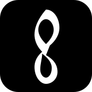

Portfolio
Changhun Lee
예술적 창의성과 AI의 만남
Portfolio
예술적 창의성과 AI의 만남
지금 이 순간에도 artistr.co.kr에서는 AI가 매일 음악계 공연 소식을 모으고 있습니다.
시작은 제 불편이었습니다. 오케스트라 공연지원팀에서 1년 8개월간 일하며 같은 문제를 반복해서 마주했습니다. 오디션 공고는 출처마다 흩어져 있어 연주자가 기회를 놓쳤고, 섭외할 때마다 연주자를 일일이 개별 연락해야 했으며, 연주자들이 정보를 나눌 커뮤니티도 없었습니다. 연주자와 회사의 입장을 동시에 겪으며, 이 불편은 누군가 풀어야 한다고 생각했습니다.
그래서 직접 만들었습니다. artistr는 구글 뉴스 등 약 15개 소스에서 음악계 공연 소식을 AI가 매일 자동으로 찾아 모아 게시하고, 섭외·레슨·커뮤니티를 한곳에 담은 서비스입니다. 새 소식이 있으면 사람이 손대지 않아도 매일 쌓여, 지금까지 50건이 넘는 정보가 모였고 그 수는 계속 늘고 있습니다. 저는 이 서비스의 첫 사용자이기도 합니다.
저는 ‘AI를 넣는 것’이 아니라 ‘문제를 푸는 것’을 먼저 봅니다.
이 기준은 자동매매 프로젝트 trade에서 얻었습니다. 처음에는 더 복잡하고 똑똑한 모델이 더 나은 결과를 낼 것이라 가정했지만, 7년치 일봉 데이터로 여러 전략을 백테스팅한 결과는 정반대였습니다. 화려한 고배율 전략은 모두 실패했고, AI 호출이 전혀 없는 단순 추세추종 규칙만 장기적으로 우위를 보였습니다. 트레이딩뷰 독립 검증도 통과했습니다. 저는 이 결과를 받아들여 AI를 쓰지 않는 쪽을 택했습니다.
반대로 AI가 진짜 필요한 곳도 구분합니다. 4인 팀 프로젝트 Daily Script에서는 방대한 대본과 도서에서 명대사를 사람이 일일이 골라내는 일이 비효율적이었습니다. 그래서 Claude로 텍스트에서 명대사를 추출하고, 사람이 검수·번역하는 흐름을 설계했습니다. AI가 할 일과 사람이 할 일을 나눈 것입니다.
이런 판단은 한 번으로 끝나지 않았습니다. 연주 중 악보를 넘길 손이 없다는 불편에서 출발한 Score Flow Lite, 팬과 크리에이터를 잇는 Giftshorts까지 여러 제품을 출시 단계까지 끌고 갔습니다. 특히 Giftshorts에서는 돈을 낸 팬이 영상을 못 받는 상황을 시스템이 자동으로 되돌리도록, 기한 내 미이행 시 자동 환불을 설계했습니다.
가장 도전적이었던 일은, 아무런 인프라도 없는 곳에서 교육 제품 하나를 처음부터 끝까지 책임진 경험입니다.
대학 졸업 후 KOICA 음악 프로젝트로 르완다에 파견되었을 때, 현지에는 체계적인 음악 교육 자료가 전무했습니다. 음악 전문가로서 막연히 가르치는 대신 문제부터 정의하기로 했습니다. 3개 학교를 돌며 학생 100여 명과 교사 30여 명의 학습 실태를 조사했고, 서구식 이론을 그대로 전달해서는 지속될 수 없다는 점을 확인했습니다. 이를 바탕으로 현지 언어와 문화에 맞춘 12단원 250쪽 교재를 제작했고, 르완다 교육청과 협의한 뒤 직접 프레젠테이션해 공식 인증까지 받았습니다.
사용자 조사부터 문제 정의, 제작, 의사결정자 설득과 승인까지 한 사이클을 혼자 끝까지 돌렸습니다. 인프라가 없는 환경에서도 끝까지 결과를 냈고, 이 경험이 지금 여러 제품을 기획부터 출시까지 끌고 가는 바탕이 되었습니다.
제품을 만드는 일은 결국 사람을 모으고 맞춰가는 일입니다.
중·고등학교 학생회장과 음악대학 학회장을 맡으며 여러 구성원의 목소리를 하나의 방향으로 모으는 자리에 있었습니다. 학회장 시절 정기공연을 기획할 때는 예기치 못한 행정 오류와 인력난이 겹쳤지만, 흩어진 변수를 하나씩 조율해 300명이 넘는 관객 앞에서 공연을 끝까지 완성했습니다. 여러 사람과 일정을 데드라인 안에 정렬해 결과물을 내는 일은, 지금 제가 제품을 만드는 방식과 다르지 않습니다.
오케스트라에서도 마찬가지였습니다. 연주자들의 의견이 충돌해 리허설이 어려워졌을 때, 연주자를 개별적으로 만나 설득하고 그 요청을 회사 운영에 반영해 이후 공연에 차질이 없도록 정리했습니다. 사용자의 요구와 조직의 제약 사이에서 균형점을 찾는 이 일은, 기획자가 매일 하는 일과 같습니다. 저는 그 일을 무대 위가 아니라 무대 뒤에서 이미 오래 해왔습니다.
PM(프로젝트매니저) · 공연지원팀 콘서트매니저 1년차
중학생 대상 드론 교육 진행
에그엔터
유튜브 쇼츠 제작
코이카(KOICA)
르완다 현지 음악 이론 교재 제작
AI 서비스 기획 · 프로덕트 매니지먼트 10주 과정
동대문여성인력개발센터
드론 영상 촬영 및 프리미어 프로를 이용한 영상 편집

A platform connecting artists with audiences — bringing the stage to everyone.
A new way to read music — turning sheet music into something fluid.
An installable LLM companion that turns each day into a script — write, reflect, repeat.
팬과 크리에이터를 잇는 영상 선물 플랫폼 — 기한 내 미이행 시 자동 환불까지 설계했습니다.
활동 히스토리를 여기에 추가하세요.